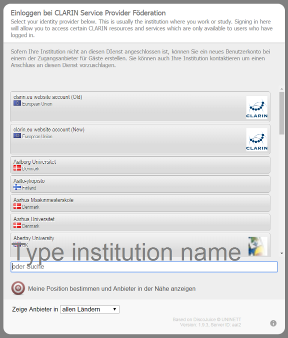
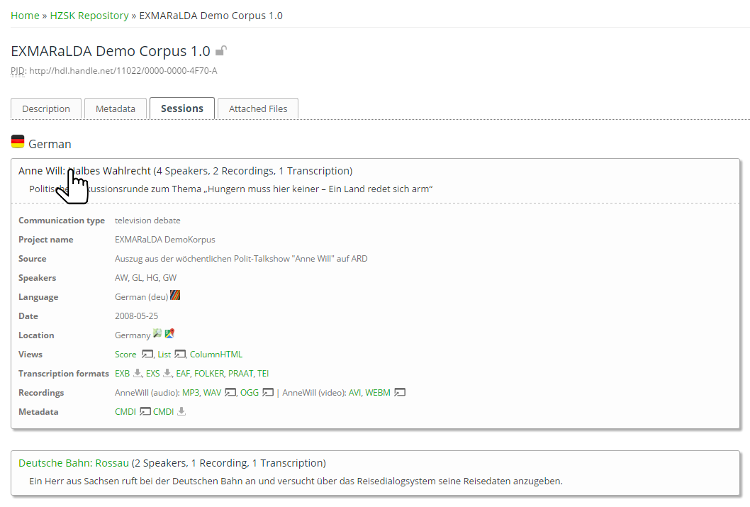

![Icon: English flag]( "English")
![Icon: Deutsche Flagge]( "Deutsch")
There is a good chance that you can sign in directly with a valid account from your research institution, since many institutions already participate in the CLARIN trusted domain, which is a basic requirement.
Wahrscheinlich verfügen Sie bereits über ein gültiges Benutzerkonto Ihrer Institution, mit dem Sie sich ohne Umwege anmelden können, da viele Institutionen Teil der "CLARIN trusted domain" sind. Dieses ist eine grundlegende Voraussetzung für die Nutzung von Single sign-on.
To sign in, click on the Login button on the HZSK website or follow this link to the login page, and choose "Single sign-on".
Um sich anzumelden, klicken Sie auf den Login-Button auf der HZSK Webseite oder folgen Sie diesem Link zur Login-Seite, und wählen Sie "Single sign-on" aus.
Search and choose your institution from the list and follow the directions to log in with your institutional user name and password.
Suchen Sie Ihre Institution über das Eingabefeld und wählen Sie sie aus der Liste aus. Danach folgen Sie den Anweisungen, um sich mit Ihrem existierenden Benutzernamen und Passwort auf der Loginseite Ihrer Institution anzumelden.

Once you are successfully logged in you have access to the HZSK-ACA licensed corpora and you can download as described in Usage of Corpora.
Sobald Sie sich erfolgreich angemeldet haben, werden Sie auf die HZSK-Webseite zurückgeleitet und erhalten automatisch Zugang zu den mit HZSK-ACA lizensierten Korpora (Voraussetzung ist, dass Sie von Ihrer Institution als akademischer Benutzer geführt werden) und können Ressourcen ansehen und herunterladen (beschrieben in "Verwendung von Korpora").
Please note: If your institution is not displayed in the list (i.e. it does not participate in the CLARIN trusted domain) or if the Single sign-on does not work for you anyway, you can use a CLARIN account to sign in, which you can register directly at CLARIN.
Beachten Sie: Falls Ihre Institution nicht in der Liste erscheint (d.h. falls sie nicht Teil der "CLARIN trusted domain" ist) oder falls das Single sign-on aus anderen Gründen für Sie nicht funktioniert, können Sie einen CLARIN-Account verwenden, um sich anzumelden. Diesen können Sie einfach direkt bei CLARIN registrieren.
Basically, we distinguish three different kinds of users:
Im Allgemeinen unterscheiden wir drei Typen von Nutzern:
The structure of the stored corpora is generally the same. The available files are usually stored in the "Sessions" tab. All (recording) sessions or communications (in EXMARaLDA language), that belong to a corpus, can be found here.
Die gespeicherten Korpora sind gleich strukturiert. Die verfügbaren Dateien sind normalerweise im Tab "Sessions" einzusehen. Alle (Aufnahme-)Sessions oder Kommunikationen (in EXMARaLDA-Terminologie) eines Korpus sind hier zu finden.
Details about each session are displayed when you click on the session title, and files available for download can be found in the session overview under "Transcription formats", "Recordings", and "Metadata". You can also view transcriptions online if you click a link under "Views".
Details zu den einzelnen Sessions werden angezeigt, wenn Sie auf den Titel einer Session klicken. Die herunterladbaren Dateien sind in der Sessionübersicht unter "Transcription formats", "Recordings", und "Metadata" zu finden. Transkriptionen können auch online angesehen werden, indem Sie einen Link aus den "Views" öffnen.

For some corpora, certain files can be downloaded from links directly in the "Descriptions" and "Attached files" tabs.
Bei manchen Korpora werden bestimmte Dateien direkt in den Tabs "Beschreibung" und "Zugehörige Dateien" zum Download angeboten.
If you choose a corpus you should check all the tabs for information and the files you want to download. Every spoken corpus contains a .coma file, different transcription formats and corresponding audio files.
Wenn Sie sich für ein Korpus interessieren, sollten Sie alle Tabs auf der Korpusübersichtsseite nach Informationen und herunterladbaren Dateien prüfen. Jedes Korpus gesprochener Sprache enthält eine .coma-Datei, verschiedene Transkriptionsformate und in der Regel zugehörige Audiodateien.
If the single sign-on does not work for you, you can use a CLARIN account to sign in, which you can register directly at CLARIN.
Falls das Single sign-on für Sie nicht funktioniert, können Sie ein CLARIN-Benutzerkonto verwenden, um sich einzuloggen. Ein CLARIN-Benutzkonto können Sie direkt bei CLARIN registrieren.
If you have corrections or suggestions concerning the structure or contents of the HZSK Help Center, please contact us via the Helpdesk or visit the Github project of the HZSK Help Center (licensed under CC-BY-SA-4.0).
Falls Sie Korrekturvorschläge oder Anmerkungen zur Struktur oder den Inhalten des HZSK Hilfecenter haben, schreiben Sie uns eine Nachricht über den Helpdesk oder besuchen Sie das Github-Projekt des HZSK Hilfecenter (lizensiert unter CC-BY-SA-4.0).
Direct link to contact form: http://support.clarin-d.de/mail/
Direkter Link zum Kontaktformular: http://support.clarin-d.de/mail/